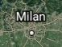

Italy
From their delicious pasta to their beautiful structures, this European country has greatly impacted
the Western culture.
Pictured above is the Colosseum, which once was used for gladiatorial contests like animal hunts to
one-on-one battles.
Click the cities on the bottom for more.

a